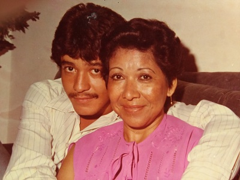
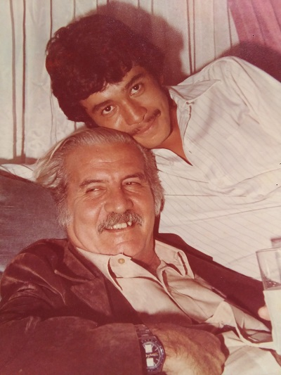
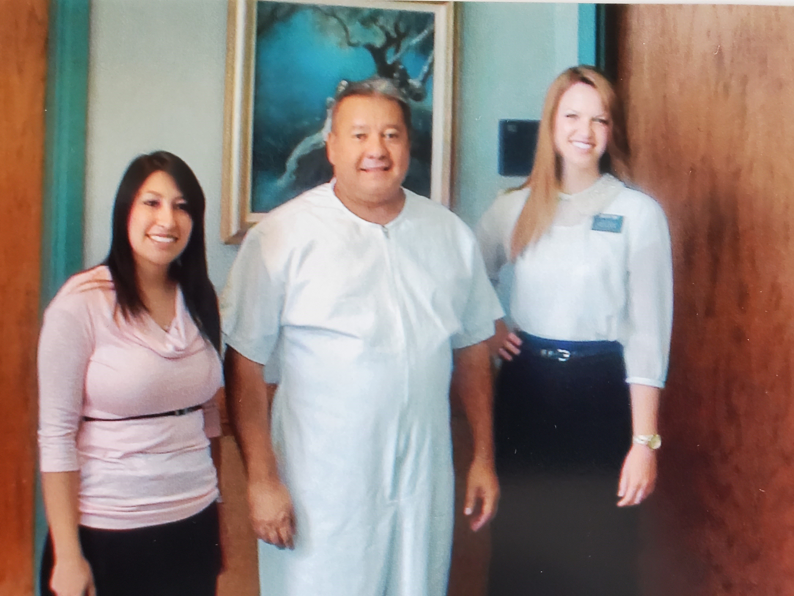
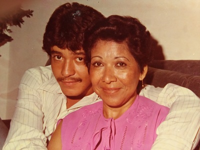
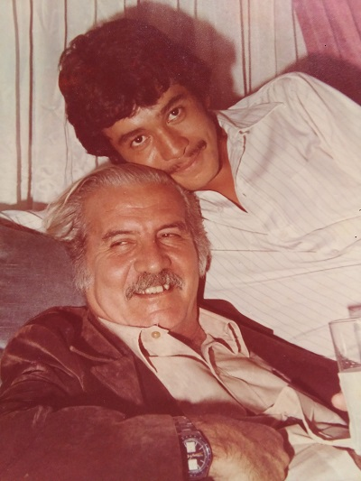
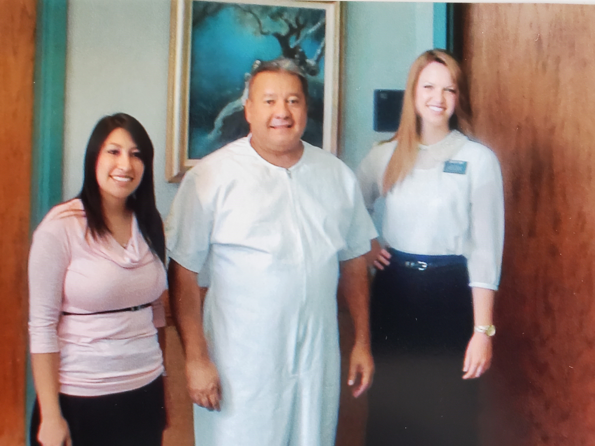

Diaz Family Memories
Implementing my solution will help me show our Memories Personal Site that will help our families grow together and I can leave something to our grandchildren to continue the work. I would love to tell you more about what I am working on. Wait, is there a time that we can talk in the next day or two? Or just wait for the upcoming release of my personal web site and you can see it for yourself.
First Time in The Montreal Temple
In the temples members of the Church who make themselves eligible can participate in the most exalted of the redeeming ordinances that have been revealed to mankind. There, in a sacred ceremony, an individual may be washed and anointed and instructed and endowed and sealed. And when we have received these blessings for ourselves we may officiate for those who have died without having had the same opportunity.